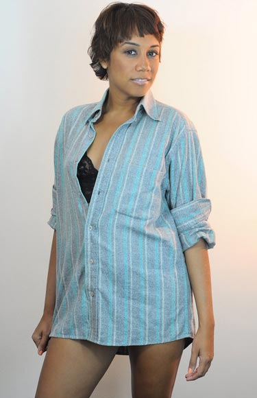

Funções / Locução
As informações de cada perfil são de responsabilidade das profissionais.
Você quer conhecer profissionais de quais estados?
Marcar/Desmarcar todos
CARREGANDO ...
 Cláudia Barbot (RJ)
Cláudia Barbot (RJ)
Cláudia Barbot
Rio de Janeiro (RJ)
claubarbot@yahoo.com.br
Cláudia Barbot teve sua formação através de oficinas com diversos grandes nomes do teatro gaúcho, além de Workshops com profissionais nacionais e internacionais. Fez parte de diversos curtas metragens, entre eles "Cadernos da Guerra", de Alan Mendonça e "Tudo que resta", de Davi de Oliveira Pinheiro. Filmou no início de 2016 seu primeiro longa-metragem, "Contos do Amanhã", que está em fase de finalização. Além disso fez uma participação na mini-série "O Tempo e o Vento", que foi exibida nos primeiros dias do ano de 2014. Seu último espetáculo teatral foi "Áurea, a lei da velha senhora", da Cia Banquete Cultural. É também integrante da Cia Vocal Cênica EmBandoCanto desde 2014.
http://www.facebook.com/claubarbot | http://youtube.com/claubarbot
Outras atividades de Cláudia Barbot
Atuação |
Dublagem |
Produção
Amostra de vídeo
Cristina Nogueira (RJ)
Cristina Nogueira
36 anos | Rio de Janeiro (RJ)
primeiropulo@gmail.com
Atriz formada pela escola de teatro Martins Penna.
http://crisnogue.wixsite.com/crisnogue
Outras atividades de Cristina Nogueira
Atuação |
Produção
Amostra de vídeo
Dani Reis (RS)
Dani Reis
29 anos | Viamão (RS)
dani.reis.87@gmail.com
Dani Reis é uma atriz gaúcha, nascida em 25 de fevereiro de 1987, natural de São Francisco de Paula na Serra Gaúcha. Atua no teatro desde 2010 e vem desenvolvendo um trabalho interessante no cinema e na publicidade também.
http://facebook.com/danielareisatriz
Outras atividades de Dani Reis
Atuação |
Dublagem |
Locução |
Oficinas e cursos livres |
Pesquisa e desenvolvimento
Amostra de vídeo
 Denizeli Cardoso - DNZL (RS)
Denizeli Cardoso - DNZL (RS)
Denizeli Cardoso - DNZL
51 anos | Porto Alegre (RS)
denizeli_cardoso@yahoo.com.br
Experiência Profissional: Iniciou no teatro com o grupo teatral Face Carretos no espetáculo “Macário o Afortunado” de Camilo de Lélis. Ainda com o grupo participou da abertura do espaço cultural Usina do Gasômetro. Em 1993 estréia o espetáculo Clara Guerreira, para logo em seguida dar rumo também a sua carreira decantora, ingressando em 1994 na banda M16 de Eduardo Borges(Branca). A partir daí procura aprimorar-se como cantora, participando de Corais(Coral da AABB, URFGS e Santa Casa), além de fazer backin vocal para bandas e gravar jingles. Em 1999 volta a trabalhar no teatro com Camilo de Lélis na montagem “Os Crimes da Rua do Arvoredo”.
https://www.facebook.com/denizeli.cardoso
Outras atividades de Denizeli Cardoso - DNZL
Atuação |
Dublagem |
Produção
Amostra de vídeo
 Erica Ribeiro (SP)
Erica Ribeiro (SP)
Erica Ribeiro
29 anos | São Paulo (SP)
eraribeiro@gmail.com
Artísta multifuncional.
http://eraribeiro.blogspot.com
Outras atividades de Erica Ribeiro
Atuação |
Cenografia |
Direção de Arte |
Dublagem |
Figurino |
Maquiagem |
Oficinas e cursos livres |
Preparação de Elenco
Amostra de vídeo
 Luciana Silveira (SP)
Luciana Silveira (SP)
Luciana Silveira
São Paulo (SP)
lucianasilveira007@gmail.com
Atriz formada pelo INDAC em "Artes Cênicas" em 2001, DRT 18629. Formada pelo SENAC LAPA-SP em Locução Noticiarista de TV. Conheça minha trajetória artística em meu site.
http://www.lucianasilveira.com.br
Outras atividades de Luciana Silveira
Atuação |
Dublagem
Amostra de vídeo
 Priscila Xavier (PE)
Priscila Xavier (PE)
Priscila Xavier
25 anos | Recife (PE)
priscilaxavier06@gmail.com
Graduada em Rádio, TV e Internet pela Universidade Federal de Pernambuco trabalha desde 2012 com áudio-descrição, tradução visual para pessoas cegas e com baixa visão. Facilita oficinas de Comunicação Inclusiva e foi premiada com o 3º Melhor Roteiro de Áudio-descrição e Melhor Áudio-descrição pelo Júri Popular com o curta “Pérolas de Açúcar” no Festival VerOuvindo 2014. No ano seguinte fundou a Entrelinhas Comunicação Acessível, onde oferece serviços de áudio-descrição, legenda para surdos e Libras, buscando atuar principalmente no setor audiovisual.
http://entrelinhasca.com
Outras atividades de Priscila Xavier
Audiodescrição |
Oficinas e cursos livres
Amostra de vídeo
 Thalma de Freitas (EUA)
Thalma de Freitas (EUA)
Thalma de Freitas
42 anos | Los Angeles (EUA)
thalmadefreitas@gmail.com
Thalma de Freitas é atriz, cantora e compositora. Atuou em 15 tele-novelas e no teatro com diretores, Augusto Boal, Jorge Fernando e Michel Melamed. Filha do maestro Laercio de Freitas, crooner na big band carioca Orquestra Imperial, suas músicas já foram gravadas por Gal Costa, Mariana Aydar e Filipe Catto.
http://www.thalmadefreitas.com
Outras atividades de Thalma de Freitas
Atuação |
Dublagem |
Produção
Amostra de vídeo
 Ticiane Simões (AL)
Ticiane Simões (AL)
Ticiane Simões
33 anos | Maceió (AL)
ticiane.santana@hotmail.com
Sou atriz em Alagoas, portanto necessito exercer várias outras funções para sobreviver. Sou negra e indígena, embora admita não ter um aprofundamento de minha árvore genealógica. Sou "multifacetaria", inquieta e guerreira. Já fiz, e faço ainda, muitos trabalhos para o teatro e nos últimos anos venho me permitindo descobrir o cinema. Bem, sempre é mais fácil falar de um personagem que de mim...